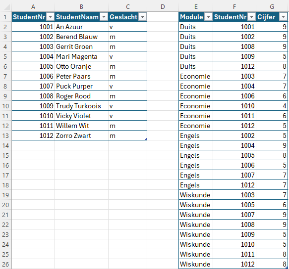
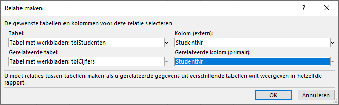
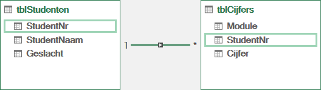
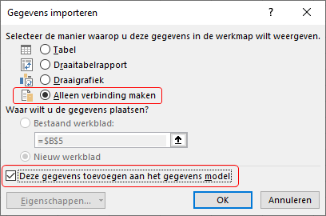
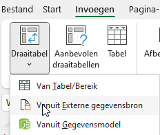
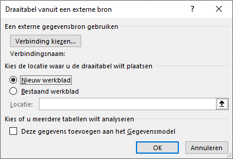
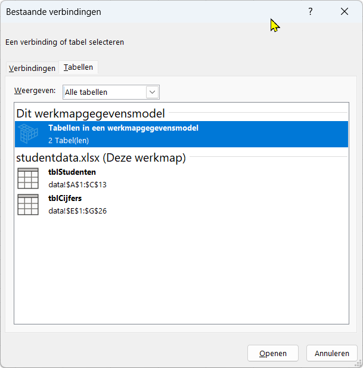
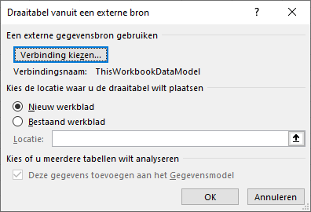
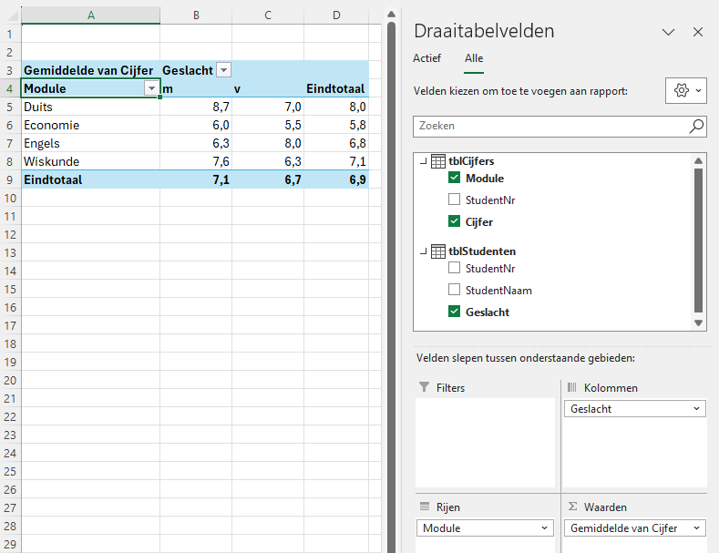

Datamodel maken in Excel
Een datamodel in Excel lijkt op een relationele database, waarin twee of meer tabellen met elkaar verbonden zijn via een gemeenschappelijk veld, het sleutelveld. Dit sleutelveld moet unieke waarden hebben, zoals bijvoorbeeld een persoonsnummer of ordernummer.
Als eenvoudig voorbeeld het bestand studentdata.xlsx dat twee Exceltabellen bevat met modulecijfers van studenten.
Tabel
tblStudentenbevat de persoonsgegevens van de studenten met veldStudentNrfungeert als sleutel van deze tabel.Tabel
tblCijfersbevat de behaalde cijfers per module. De combinatie vanModuleenStudentNris uniek en vormt samen de sleutel van deze tabel.
Omdat beide tabellen het veld StudentNr bevatten, kunnen ze via dat veld met elkaar verbonden worden.

tblStudenten en rechts tblCijfers.Hierna worden drie verschillende manieren besproken om een datamodel voor deze gegevens te maken. Aan het eind wordt een draaitabel gemaakt om de werking van de relaties tussen de tabellen te demonstreren.
Datamodel maken via de Relaties-functie
Selecteer een willekeurige cel in de tabel tblStudenten en kies Tab Gegevens > Datamodel (groep Hulpmiddelen voor gegevens) > Relaties. In het dialoogscherm “Relaties beheren” klik je op Nieuw. Vul het venster “Relaties maken” in zoals in Figuur 1 is weergegeven.

StudentNr.
Klik op OK. De relatie wordt nu toegevoegd in het dialoogscherm “Relaties beheren”, dat je nu kunt sluiten.
Datamodel maken met PowerPivot
Selecteer een willekeurige cel in tabel tblStudenten en kies Tab Power Pivot > Toevoegen aan gegevensmodel. Sluit daarna PowerPivot.
Selecteer nu een willekeurige cel in de tabel tblCijfers en kies opnieuw Tab Power Pivot > Toevoegen aan gegevensmodel.
Kies in het PowerPivot venster voor Diagramweergave. Selecteer het veld StudentNr in het diagram tblStudenten en sleep dit naar het veld StudentNr in tblCijfers. Er wordt nu één-op-veel relatie gemaakt.

StudentNr.
Sluit daarna het PowerPivot venster.
Datamodel maken met Power Query
Selecteer een willekeurige cel in de tabel tblStudenten en kies Tab Gegevens > Van tabel/bereik. De Power Query Editor wordt geopend.
Kies vervolgens Tab Start > Sluiten en laden > Sluiten en laden naar. In het dialoogvenster “Gegevens importeren” selecteer je Alleen verbinding maken en vink je aan Deze gegevens toevoegen aan het gegevensmodel (zie Figuur 3). Klik daarna op OK.

Herhaal deze procedure voor de andere tabel.
Nu moet de relatie tussen de twee geïmporteerde tabellen nog worden gelegd. Kies hiervoor Tab Powervivot> Beheren > Diagramweergave en maak de relatie via het veld StudentNr, op dezelfde manier als bij de vorige methode.
Draaitabel maken uit datamodel
De twee tabellen zijn nu onderdeel van het datamodel en via StudentNr met elkaar verbonden. Om de werking te demonstreren wordt een draaitabel gemaakt waarmee onderzocht kan worden of het gemiddelde cijfer per module verschilt tussen mannen en vrouwen.
Terug in het werkblad kies Tab Invoegen > Draaitabel > vanuit Externe gegevensbron.

In het dialoogvenster “Draaitabel vanuit een externe bron” klik je op Verbinding kiezen.

In het venster “Bestaande verbindingen” selecteer je de tab Tabellen en kies je Tabellen in een werkmapgegevensmodel.

Klik op Openen. In het dialoogvenster is nu de verbindingsnaam ThisWorkbookDataModel toegevoegd. Kies vervolgens om de draaitabel in een Nieuw werkblad te plaatsen en klik op OK.

In het nieuwe werkblad kun je nu de draaitabelvelden kiezen om bijvoorbeeld het gemiddelde cijferper module en per geslacht weer te geven. In Figuur 8 zie je een voorbeeldresultaat.

Overzicht
Drie manieren om een datamodel te maken
| Methode | Kenmerken | Geschikt voor |
|---|---|---|
| Relaties-functie | Snel en eenvoudig, geen extra vensters. | Kleine datasets en basisrelaties. |
| PowerPivot | Geavanceerde modelleermogelijkheden, gebruik van DAX. | Grotere modellen en berekeningen. |
| Power Query | Flexibele gegevensimport en -transformatie. | Gegevensvoorbereiding en combineren van meerdere bronnen. |
Conclusie
Met deze drie methoden kun je in Excel op verschillende manieren een datamodel opbouwen. Welke methode je kiest, hangt af van je voorkeur en de complexiteit van je gegevens. Door de relaties tussen tabellen goed te definiëren, kun je krachtige analyses maken met draaitabellen en PowerPivot.